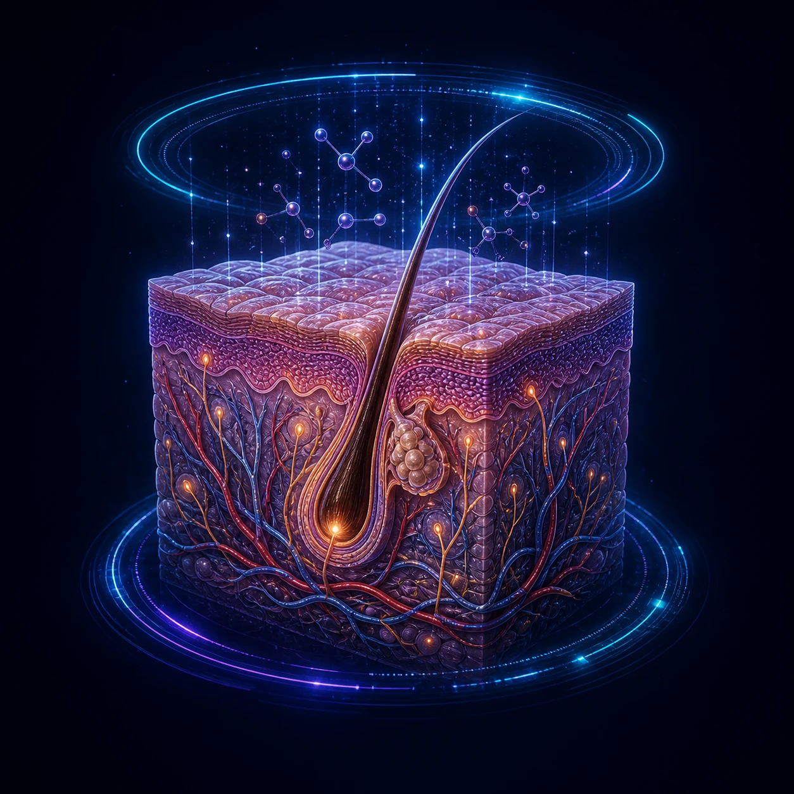

Central Integration of
Olfactory Signaling
Linking Neurotransmitter and Neuroendocrine Systems
Odor perception is more than a sense—it is a gateway to brain integration. Olfactory signals converge in the hypothalamus, uniting neurotransmitter and neuroendocrine pathways to shape physiology, behavior, and whole-body health.
Explore the science
Olfactory Epithelium
(ORNs)
Olfactory
Bulb
Limbic System
- Amygdala
- Hippocampus
- Entorhinal Cortex
- Piriform Cortex
Hypothalamus — Integrative Hub
- Receives olfactory and limbic inputs
- Integrates emotional, cognitive and sensory information
- Coordinates neurochemical, neuroendocrine and autonomic outputs
Neuromodulatory
Brain Nuclei
Neurosecretory
Neurons
Autonomic Control
Centers
Local Hypothalamic
Circuits
Central Systems Integration
Neurotransmitter System
Neuromodulatory brain nuclei
(project to cortex, limbic areas and other regions)
Serotonin
(5-HT)
Raphe Nuclei
Dopamine
(DA)
VTA
Locus Coeruleus
Noradrenaline
(NE)
Locus Coeruleus
Basal Forebrain
Acetylcholine
(ACh)
Basal Forebrain
GABA /
Glutamate
Local Circuits
Functions: mood, reward, motivation, arousal,
attention, cognition, stress resilience
Neuroendocrine System
Hypothalamic neurosecretory neurons
Anterior Pituitary (through portal system)
CRH↓ACTHTRH↓TSHGnRH↓LH/FSHGHRH↓GHSomatostatin↓↓ GH, ↓ TSHOthers↓Prolactin
Posterior Pituitary
(axonal transport)
OxytocinVasopressin
(ADH)
(ADH)
Peripheral endocrine glands / organs
Cortex
Gland
(Ovary/Testis)
Muscle, etc.
(Uterus, Breast,
Kidney, Vessels)
Functions: hormonal balance, stress response, growth,
reproduction, fluid balance, metabolism
Autonomic Nervous System
(Activation)
(Recovery)
Regulates organ function, inflammation,
vascular tone, sweating, etc.
Physiological & Behavioral Outcomes
Regulation
Function
& Recovery
Affect cognition, motivation,
homeostasis and behavior
Brain–Skin Axis

- Barrier Function
- Inflammation
- Sebum Production
- Hydration
- Microbiome Balance
- Wound Healing
OBSI Pathway
The Olfactory–Brain–Systemic
Integration Pathway
From inhalation to whole-body systemic effects.
Inhalation

Olfactory
Reception
Olfactory
Bulb
Primary Olfactory
Projections
Limbic & Amygdala
Affective Network
Primary Olfactory Projections
- Piriform Cortex
- Anterior Olfactory Nucleus (AON)
- Periamygdaloid Cortex
- Entorhinal Cortex
(NTS, Dorsal Motor Nucleus of Vagus, etc.)
Limbic & Amygdala Network
- Olfactory Bulb
- Hippocampus
- Amygdala
- Cingulate Cortex
- Thalamus
(Mediodorsal)
HPA Axis
Hypothalamic–Pituitary–
Adrenal Axis
 Hypothalamus
Hypothalamus
(CRH) Anterior Pituitary
Anterior Pituitary
(ACTH) Adrenal Cortex
Adrenal Cortex
(Cortisol)
HPT Axis
Hypothalamic–Pituitary–
Thyroid Axis
- Hypothalamus
(TRH) - Anterior Pituitary
(TSH)  Thyroid Gland
Thyroid Gland
(T3 / T4)
HPG Axis
Hypothalamic–Pituitary–
Gonadal Axis
- Hypothalamus
(GnRH) - Anterior Pituitary
(LH / FSH)  Gonads
Gonads
(Estrogen / Testosterone)
ANS–SAM Pathway
Autonomic Nervous System –
Sympathetic Adrenal Medullary
 Sympathetic Nervous System
Sympathetic Nervous System
(ANS)- Adrenal Medulla
 Epinephrine / Norepinephrine
Epinephrine / Norepinephrine
Systemic Cortisol Influence
Immune System
- Immune Cell Activity
- Inflammatory Response
- Cytokine Release
- Immune Surveillance
Metabolic System
- Blood Sugar Regulation
- Basal Metabolic Rate (BMR)
- Energy Expenditure
- Lipid & Protein Metabolism
Endocrine System
- Reproductive Physiology
- Growth & Development
- Stress Response
- Hormone Balance
Neurotransmitter System
- Emotional Stability
- Alertness & Focus
- Reward Mechanism
- Cognitive Function